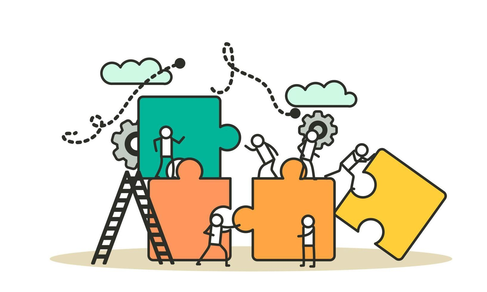
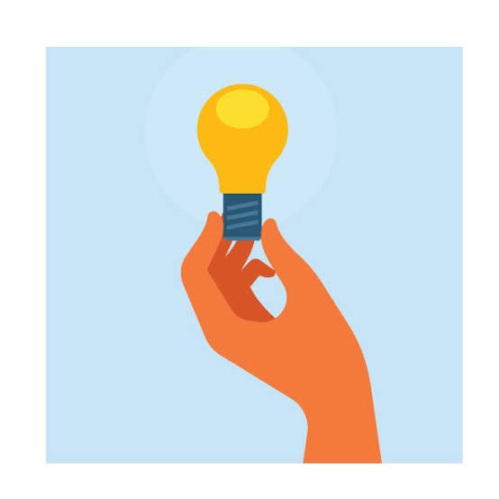

Pronto para escrever sua redação?
Agora que você tem temas e repertórios em mãos, escreva sua redação e envie para receber uma correção personalizada.
Enviar minha redação →Tópico 03
Citações, dados e temas recorrentes para enriquecer sua redação e melhorar sua argumentação.
Nesta página você aumentará seu repertório sociocultural e eu preparei a você uma surpresa que será exposta ao clicar em cada uma das três imagens ao final desta página. 🟢Clique em um tema para encontrar repertórios que podem ser utilizados na sua redação.
Selecione um tema ao lado ou utilize a busca para encontrar repertórios relacionados à sua redação.
0 repertórios encontrados
Agora que você tem temas e repertórios em mãos, escreva sua redação e envie para receber uma correção personalizada.
Enviar minha redação →
Coesão Textual

Dicas e Curiosidades Sobre Redação

Tese X Opinião X Argumento